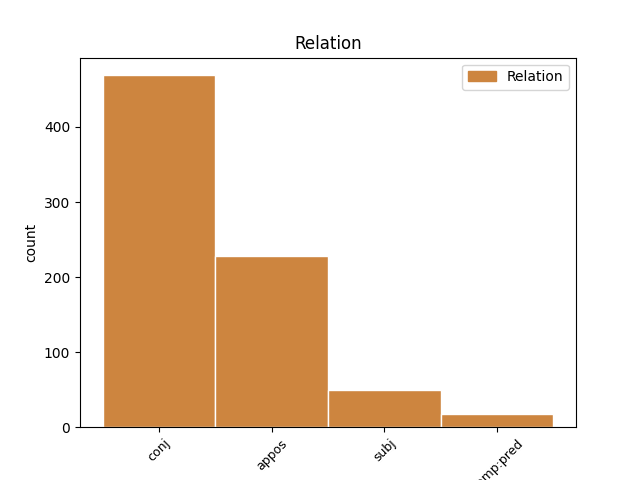
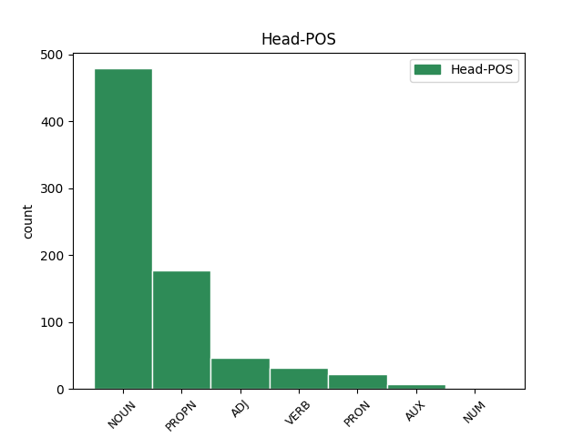
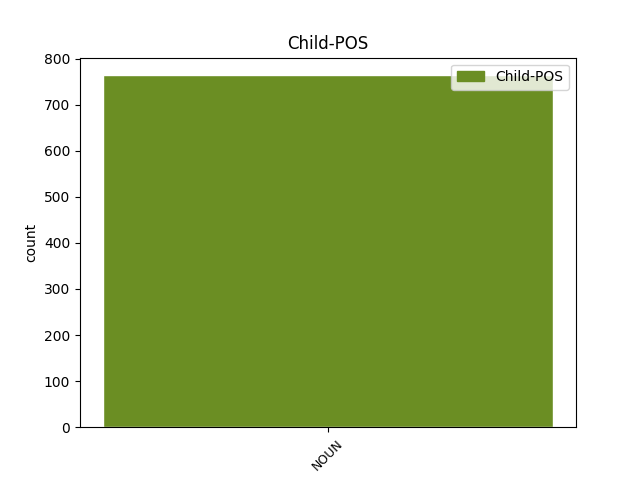

Distribution of features within this leaf



Agreement Rules sorted by frequency.
- When the dependent token is the conjunct(conj) of the head token, and the dependent token is NOUN.
1 aþþan _ _ _ _ 0 _ _ _
2 all _ _ _ _ 0 _ _ _
3 hrain _ _ _ _ 0 _ _ _
4 hrainjaim _ _ _ _ 0 _ _ _
5 iþ _ _ _ _ 0 _ _ _
6 bisaulidaim _ _ _ _ 0 _ _ _
7 jah _ _ _ _ 0 _ _ _
8 ungalaubjandam _ _ _ _ 0 _ _ _
9 ni _ _ _ _ 0 _ _ _
10 waiht _ _ _ _ 0 _ _ _
11 hrain _ _ _ _ 0 _ _ _
12 ak _ _ _ _ 0 _ _ _
13 bisaulida _ _ _ _ 0 _ _ _
14 sind _ _ _ _ 0 _ _ _
15 ize _ _ _ _ 0 _ _ _
16 jah _ _ _ _ 0 _ _ _
17 aha aha NOUN Nb Case=Nom|Gender=Masc|Number=Sing 0 _ _ _
18 jah _ _ _ _ 0 _ _ _
19 miþwissei miþwissei NOUN Nb Case=Nom|Gender=Fem|Number=Sing 17 conj _ ref=TIT_1.15
1 qaþ _ _ _ _ 0 _ _ _
2 auk _ _ _ _ 0 _ _ _
3 sums sums ADJ Px Case=Nom|Gender=Masc|Number=Sing 0 _ _ _
4 ize _ _ _ _ 0 _ _ _
5 swes _ _ _ _ 0 _ _ _
6 ize _ _ _ _ 0 _ _ _
7 praufetus praufetes NOUN Nb Case=Nom|Gender=Masc|Number=Sing 3 appos _ ref=TIT_1.12
1 aþþan _ _ _ _ 0 _ _ _
2 all _ _ _ _ 0 _ _ _
3 hrain _ _ _ _ 0 _ _ _
4 hrainjaim _ _ _ _ 0 _ _ _
5 iþ _ _ _ _ 0 _ _ _
6 bisaulidaim _ _ _ _ 0 _ _ _
7 jah _ _ _ _ 0 _ _ _
8 ungalaubjandam _ _ _ _ 0 _ _ _
9 ni _ _ _ _ 0 _ _ _
10 waiht waiht NOUN Nb Case=Nom|Gender=Neut|Number=Sing 11 subj _ ref=TIT_1.15
11 hrain hrains ADJ A- Case=Nom|Degree=Pos|Gender=Neut|Number=Sing|Strength=Strong 0 _ _ _
12 ak _ _ _ _ 0 _ _ _
13 bisaulida _ _ _ _ 0 _ _ _
14 sind _ _ _ _ 0 _ _ _
15 ize _ _ _ _ 0 _ _ _
16 jah _ _ _ _ 0 _ _ _
17 aha _ _ _ _ 0 _ _ _
18 jah _ _ _ _ 0 _ _ _
19 miþwissei _ _ _ _ 0 _ _ _
1 ni _ _ _ _ 0 _ _ _
2 ƕashun _ _ _ _ 0 _ _ _
3 izwis _ _ _ _ 0 _ _ _
4 usluto _ _ _ _ 0 _ _ _
5 ƕamma _ _ _ _ 0 _ _ _
6 haidau _ _ _ _ 0 _ _ _
7 unte _ _ _ _ 0 _ _ _
8 niba _ _ _ _ 0 _ _ _
9 qimiþ _ _ _ _ 0 _ _ _
10 afstass _ _ _ _ 0 _ _ _
11 faurþis _ _ _ _ 0 _ _ _
12 jah _ _ _ _ 0 _ _ _
13 andhulids _ _ _ _ 0 _ _ _
14 wairþai _ _ _ _ 0 _ _ _
15 manna _ _ _ _ 0 _ _ _
16 frawaurhtais _ _ _ _ 0 _ _ _
17 sunus _ _ _ _ 0 _ _ _
18 fralustais _ _ _ _ 0 _ _ _
19 sa _ _ _ _ 0 _ _ _
20 andstandands _ _ _ _ 0 _ _ _
21 jah _ _ _ _ 0 _ _ _
22 ufarhafjands _ _ _ _ 0 _ _ _
23 sik _ _ _ _ 0 _ _ _
24 ufar _ _ _ _ 0 _ _ _
25 all _ _ _ _ 0 _ _ _
26 qiþanana qiþan VERB V- Aspect=Perf|Case=Acc|Gender=Masc|Number=Sing|Strength=Strong|Tense=Past|VerbForm=Part|Voice=Pass 0 _ _ _
27 guþ guþ NOUN Nb Case=Acc|Gender=Masc|Number=Sing 26 comp:pred _ ref=2THESS_2.4
28 aiþþau _ _ _ _ 0 _ _ _
29 blotinassu _ _ _ _ 0 _ _ _
30 swaei _ _ _ _ 0 _ _ _
31 ina _ _ _ _ 0 _ _ _
32 in _ _ _ _ 0 _ _ _
33 alh _ _ _ _ 0 _ _ _
34 gudis _ _ _ _ 0 _ _ _
35 gasitan _ _ _ _ 0 _ _ _
Disagree Examples:
1 asans asans NOUN Nb Case=Nom|Gender=Fem|Number=Sing 3 subj _ ref=MATT_9.37
2 raihtis _ _ _ _ 0 _ _ _
3 managa manags ADJ A- Case=Acc|Degree=Pos|Gender=Fem|Number=Sing|Strength=Strong 0 _ _ _
4 iþ _ _ _ _ 0 _ _ _
5 waurstwjans _ _ _ _ 0 _ _ _
6 fawai _ _ _ _ 0 _ _ _
1 jah _ _ _ _ 0 _ _ _
2 ik _ _ _ _ 0 _ _ _
3 bidja _ _ _ _ 0 _ _ _
4 attan _ _ _ _ 0 _ _ _
5 jah _ _ _ _ 0 _ _ _
6 anþarana _ _ _ _ 0 _ _ _
7 parakletu parakletus NOUN Nb Case=Acc|Gender=Masc|Number=Sing 0 _ _ _
8 gibiþ _ _ _ _ 0 _ _ _
9 izwis _ _ _ _ 0 _ _ _
10 ei _ _ _ _ 0 _ _ _
11 sijai _ _ _ _ 0 _ _ _
12 miþ _ _ _ _ 0 _ _ _
13 izwis _ _ _ _ 0 _ _ _
14 du _ _ _ _ 0 _ _ _
15 aiwa _ _ _ _ 0 _ _ _
16 ahma ahma NOUN Nb Case=Nom|Gender=Masc|Number=Sing 7 appos _ ref=JOHN_14.17
17 sunjos _ _ _ _ 0 _ _ _
18 þanei _ _ _ _ 0 _ _ _
19 so _ _ _ _ 0 _ _ _
20 manaseiþs _ _ _ _ 0 _ _ _
21 ni _ _ _ _ 0 _ _ _
22 mag _ _ _ _ 0 _ _ _
23 niman _ _ _ _ 0 _ _ _
24 unte _ _ _ _ 0 _ _ _
25 ni _ _ _ _ 0 _ _ _
26 saiƕiþ _ _ _ _ 0 _ _ _
27 ina _ _ _ _ 0 _ _ _
28 nih _ _ _ _ 0 _ _ _
29 kann _ _ _ _ 0 _ _ _
30 ina _ _ _ _ 0 _ _ _
1 usbida _ _ _ _ 0 _ _ _
2 auk _ _ _ _ 0 _ _ _
3 anaþaima _ _ _ _ 0 _ _ _
4 wisan _ _ _ _ 0 _ _ _
5 silba _ _ _ _ 0 _ _ _
6 ik _ _ _ _ 0 _ _ _
7 af _ _ _ _ 0 _ _ _
8 Xristau _ _ _ _ 0 _ _ _
9 faur _ _ _ _ 0 _ _ _
10 broþruns _ _ _ _ 0 _ _ _
11 meinans _ _ _ _ 0 _ _ _
12 þans _ _ _ _ 0 _ _ _
13 samakunjans _ _ _ _ 0 _ _ _
14 bi _ _ _ _ 0 _ _ _
15 leika _ _ _ _ 0 _ _ _
16 þaiei _ _ _ _ 0 _ _ _
17 sind _ _ _ _ 0 _ _ _
18 Israeleitai _ _ _ _ 0 _ _ _
19 þizeei _ _ _ _ 0 _ _ _
20 ist _ _ _ _ 0 _ _ _
21 frastisibja _ _ _ _ 0 _ _ _
22 jah _ _ _ _ 0 _ _ _
23 wulþus _ _ _ _ 0 _ _ _
24 jah _ _ _ _ 0 _ _ _
25 witodis _ _ _ _ 0 _ _ _
26 garaideins _ _ _ _ 0 _ _ _
27 jah _ _ _ _ 0 _ _ _
28 triggwos _ _ _ _ 0 _ _ _
29 jah _ _ _ _ 0 _ _ _
30 skalkinassus _ _ _ _ 0 _ _ _
31 jah _ _ _ _ 0 _ _ _
32 gahaita _ _ _ _ 0 _ _ _
33 þizeei saei PRON Pr Case=Gen|Gender=Masc|Number=Plur|PronType=Rel 0 _ _ _
34 attans atta NOUN Nb Case=Nom|Gender=Masc|Number=Plur 33 subj _ ref=ROM_9.5
35 jah _ _ _ _ 0 _ _ _
36 us _ _ _ _ 0 _ _ _
37 þaimei _ _ _ _ 0 _ _ _
38 Xristus _ _ _ _ 0 _ _ _
39 bi _ _ _ _ 0 _ _ _
40 leika _ _ _ _ 0 _ _ _
41 saei _ _ _ _ 0 _ _ _
42 ist _ _ _ _ 0 _ _ _
43 ufar _ _ _ _ 0 _ _ _
44 allaim _ _ _ _ 0 _ _ _
45 guþ _ _ _ _ 0 _ _ _
46 þiuþiþs _ _ _ _ 0 _ _ _
47 in _ _ _ _ 0 _ _ _
48 aiwam _ _ _ _ 0 _ _ _
49 amen _ _ _ _ 0 _ _ _
1 goleiþ _ _ _ _ 0 _ _ _
2 izwis _ _ _ _ 0 _ _ _
3 Gaïus _ _ _ _ 0 _ _ _
4 wairdus _ _ _ _ 0 _ _ _
5 meins meins ADJ Ps Case=Nom|Gender=Masc|Number=Sing|Person=1|Poss=Yes 0 _ _ _
6 jah _ _ _ _ 0 _ _ _
7 allaizos _ _ _ _ 0 _ _ _
8 aikklesjons aikklesjo NOUN Nb Case=Gen|Gender=Fem|Number=Sing 5 conj _ ref=ROM_16.23
1 iþ _ _ _ _ 0 _ _ _
2 weis _ _ _ _ 0 _ _ _
3 merjam _ _ _ _ 0 _ _ _
4 Iesu _ _ _ _ 0 _ _ _
5 ushramidana _ _ _ _ 0 _ _ _
6 Iudaium _ _ _ _ 0 _ _ _
7 gamarzein _ _ _ _ 0 _ _ _
8 iþ _ _ _ _ 0 _ _ _
9 þiudom _ _ _ _ 0 _ _ _
10 dwaliþa _ _ _ _ 0 _ _ _
11 iþ _ _ _ _ 0 _ _ _
12 þaim _ _ _ _ 0 _ _ _
13 galaþodam ga-laþon VERB V- Aspect=Perf|Case=Dat|Gender=Masc|Number=Plur|Strength=Weak|Tense=Past|VerbForm=Part|Voice=Pass 0 _ _ _
14 Iudaie Iudaius NOUN Nb Case=Gen|Gender=Masc|Number=Plur 13 appos _ ref=1COR_1.24
15 jah _ _ _ _ 0 _ _ _
16 þiudo _ _ _ _ 0 _ _ _
17 Xristu _ _ _ _ 0 _ _ _
18 gudis _ _ _ _ 0 _ _ _
19 maht _ _ _ _ 0 _ _ _
20 jah _ _ _ _ 0 _ _ _
21 gudis _ _ _ _ 0 _ _ _
22 handugein _ _ _ _ 0 _ _ _